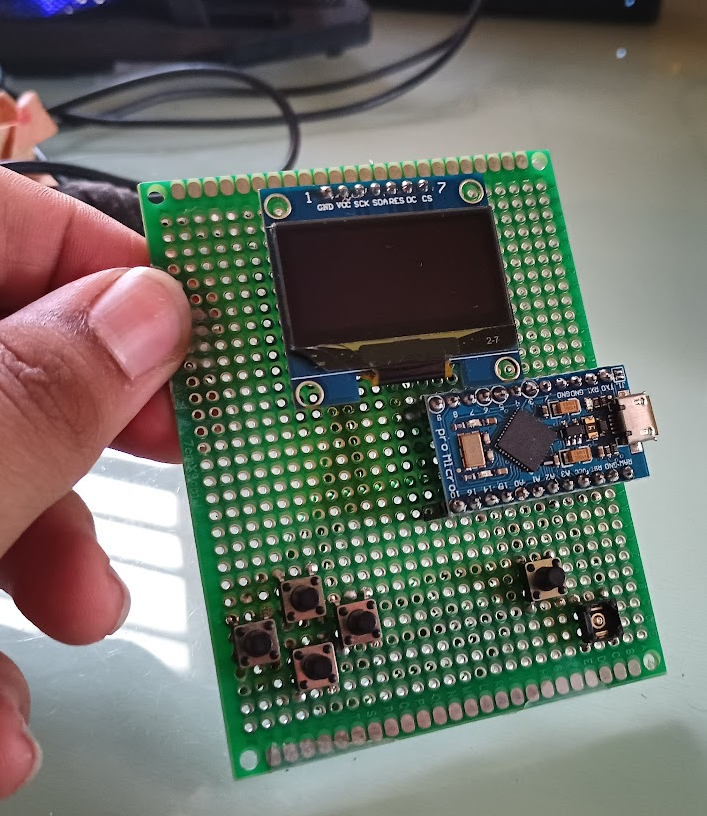
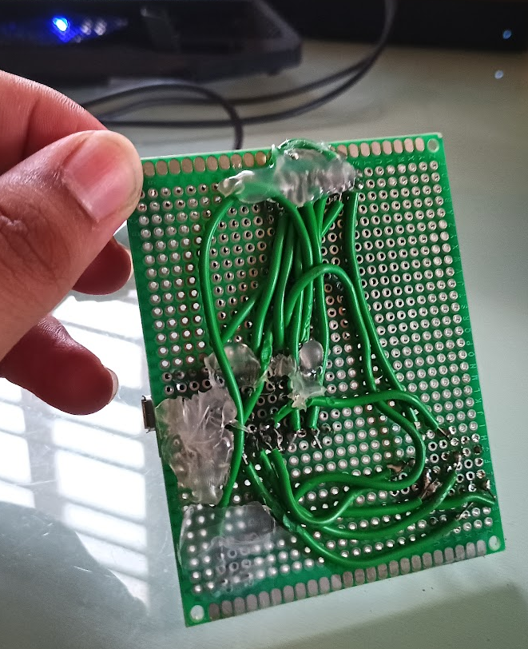
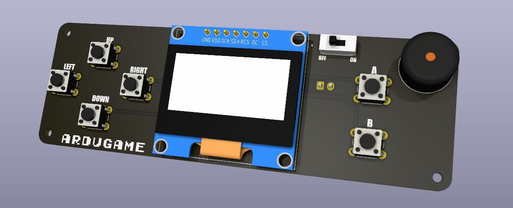
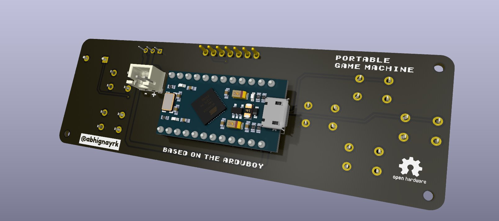
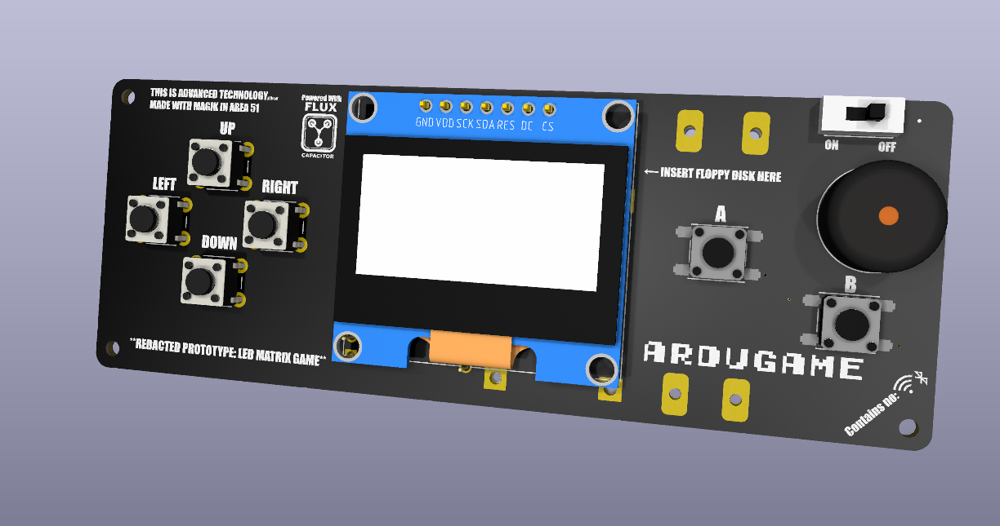
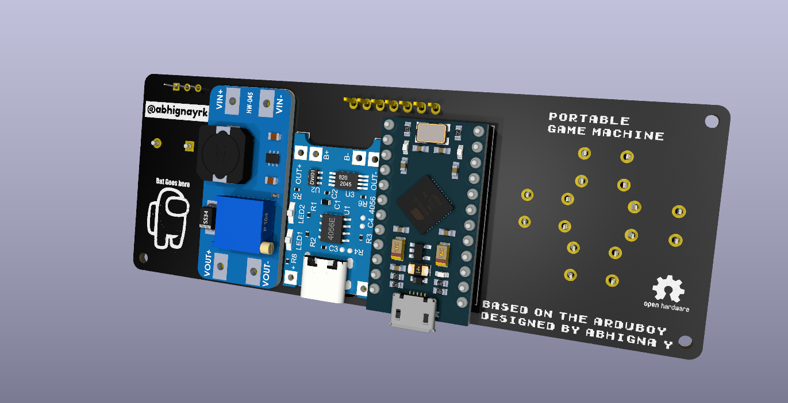

ArduGame
An Arduboy clone
September 2023 - November 2023
The beginning
I first came across the Arduboy, in September 2023, when I watched Short Circuit's video about the Arduboy Mini and ever since then the Arduboy has been one of the top 3 coolest gadgets I've seen that uses an Arduino, and the best part; all the hardware and games are open-sourced, seemed like a no-brainer to try making something similar. As a fun weekend project, I put together an ArduBoy on a perfboard. To build it I used an Arduino Pro Micro as the microcontroller paired with an SH1106 1.3" OLED as the display and threw in a couple of tactile push-buttons for the D-Pad and A and B buttons, very similar hardware to what I would eventually use on the ArduGame. Finally, to power the whole thing I used a 9V battery. Since the Pro Micro had a logic level of 5V a 1s LiPo was out of the question and I couldn't find any 2s LiPos that were small enough or felt safe enough for my application so the 9V battery was pretty much a last-ditch effort. Unfortunately, this combination of display and microcontroller eats through 9V batteries, and each battery would only allow 3-4 hours of gameplay.


After a while of playing on the very janky albeit cool-looking protoboard I decided to make a PCB for it, it would look cleaner, cooler, and would be more portable. I didn't want to spend too much time designing the PCB so I decided to use through-hole components instead of SMD components. The through-hole components made the board a little bigger but it came with the added benefit of being more comfortable to hold.
Designing the PCB
Even though I'd made my own Arduboy and had a fairly good understanding of the hardware I didn't get the idea that the whole Arduboy ecosystem was mainly made for AVR microcontrollers, and so I decided to use an RP2040 Zero as the microcontroller in my first revision ArduGame board. I had some experience using the RP2040 from my previous WatchPi project and I wanted to try out something new. Along with the RP2040 Zero, I used a TP4056 battery charging module so I could use a LiPo to power the system safely along with a little 16MB flash chip which would store a couple 100 games on my Arduboy clone instead of just one

I'd already finished routing the first revision of the ArduGame PCB when I had the bright idea of trying to figure out how I could load Arduboy games onto an RP2040. That's when I found out that the Arduboy ecosystem was not compatible with the RP2040, back to the drawing board.....
ArduGame v2
Now that I had a much better understanding of the software part of the Arduboy it was time to redesign the hardware! I started redesigning ArduGame v2 by switching to an ATMega32u4 on an Arduino Pro Micro as the microcontroller. The ATMega32u4 is the exact same microcontroller that is used on the actual Arduboy. For v2 I decided to stick with using a 9V battery instead of a LiPo. This would make the board less complex and easier to design. After remembering how bad the battery life of my original ArduGame with the 9V battery was, I decided to take the plunge and do the not-so-hard work of adding a step-up converter which honestly I should've just done in the first place.


ArduGame v2.1?
This version of the ArduGame PCB has too few changes to be considered another separate version. All I did was add a step-up converter board so that I could use a 3.3V LiPo battery and still supply the Arduino Pro Micro with the right voltage, I also added back the TP4056 battery manager. And with that, I finally had built my own game console hardware!
The files for the ArduGame PCB are here if you want to try building one or are just looking for inspiration for your own game console

